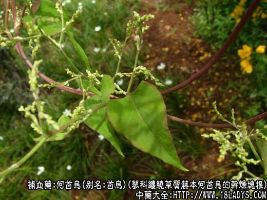
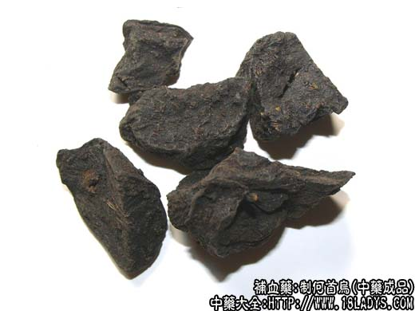
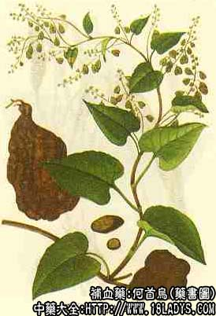

本品为常用中药。始载《开宝本草》。
别名：首乌、赤首乌、红内消。
来源：为蓼科多年生缠绕草质藤本植物何首乌的干燥块根。多为野生，并有栽培。
产地：主产于河南、湖北、江苏、四川、贵州、广西等地，除东北外大部分地区均有生产。
性状鉴别：块根呈纺锤形或团块形，一般长5～15厘米，直径4～10厘米。表面红棕色或红褐色，凹凸不平，有纵沟和皱纹。顶端有根茎残痕，下端有根痕。质坚实。难折断。商品多已横切1～4厘米的块片，切片淡黄棕色或红棕色，显云朵状花纹，由中央一个较大的中心柱外围数个类圆形的异形维管束所构成，束间均有凹陷环纹相隔，显粉性。年久的野生品，断面棕红色有一明显的木心（贵州产品较多）。气微弱，味苦涩。
主要成分：含蒽醌衍生物，主要为大黄酚和大黄泻素，又含大黄酸、大黄泻素甲醚。此外，还含有磷脂（4%左右）。另其浸出液中可能含有肾上腺皮质激素类似物。
功效与作用：滋阴、强壮、益精血。现已证实，所谓“滋阴”，其中一部分作用即为：
1、降胆固醇：对实验性家兔血清胆固醇的增高抑制作用，并能减少家兔肠道胆固醇的吸收。其原理为首乌的有效成分能与胆固醇结合。
2、抗动脉硬化：能缓解动脉粥样硬化的形成，阻止类脂质在血清留滞透到动轨内膜，可能与其所含磷脂的作用有关。
3、泻下：作用缓和，有效成分为蒽醌衍生物，能促进肠管蠕动而通便。
4、抗病毒：对流感病毒有抑制作用。
此外，在中药对肾上腺鼠肝糖原含量的影响试验中，发现何首乌有类似肾上腺皮质激素样的作用。
又所含的蒽醌衍生物能降低神经时值，有兴奋神经系统的作用。
炮制：切片生用，或切咀用黑豆汁浸透蒸黑用。北京另加黄酒蒸黑用。
性味：苦、甘、涩，微温。
归经：入肝、肾经。
功能：补肝肾、益精血、乌须发。
主治：气血亏损，遗精带下，腰膝酸痛，须发早白（制用）；久疟，痈疽瘰疠，肠燥便秘（生用）。
临床应用：1、用于治疗血虚体弱，有腰膝酸软、头昏眼花、须发早白、未老先衰，或遗精、带下等，作为滋补药用。尤其适用于虚不受补者，因首乌补而不滞，不易引发肠胃积滞或激动肝火，故凡不耐受其他温补药者，可用首乌，一般配杞子、当归、菟丝子等，方如何首乌丸。如有盗汗、自汗，配黄芪、龙骨、牡蛎、白术、黄精、炙甘草等。
2、用于治疗动脉硬化、高血压病、冠心病，常服有助于减轻和消除症状，改善健康情况，常配银杏叶、钩藤等，长期服用可收到一定的降压与降胆固醇的效果。临床观察，单用首乌对降低血胆固醇有一定作用。
3、用于治疗神经衰弱，适用于抑制型患者，与安神药同用作用更全面，常配磁石，丹参、五味子、酸枣仁、川芎，有一定效果。
4、用于治疗荨麻疹、皮肤瘙痒等皮肤风燥疾患，用生首乌较好。作用原理未明，前人认为能养血熄风，现代分析认为可能通过泻下作用，排出肠内毒素，减少刺激。同时也可能通过首乌的类肾上腺皮质激素作用，而收到抗过敏的效果，具体原理尚待进一步研究。
此外，首乌用于百日咳有一定疗效；治肠燥便秘、疮疖也可用。
附：1、①生首乌滑肠泻下消炎的作用较好，制首乌补益肝肾的作用较好；②首乌与熟地黄比较，首乌长于补肝虚，熟地黄长于补肾虚；首乌虽补而无熟地黄之腻滞。根据临床治疗血虚的经验，心血、脑血供应不足用首乌较好，末稍循环差，气血虚弱、手足冰冷者用熟地黄较好。
用量：9～15g.
处方举例：何首乌丸：何首乌15g、菟丝子9g、当归9g、牛膝9g、补骨脂9g，研末炼蜜为丸，每次9g，淡盐汤送下。
注：何首乌有赤白二种。全国所用的均为正文所述的何首乌；白首乌仅有少数地区习用，其植物来源不一，但均为萝藦科牛皮消属植物的块根，京津两市均不习用。